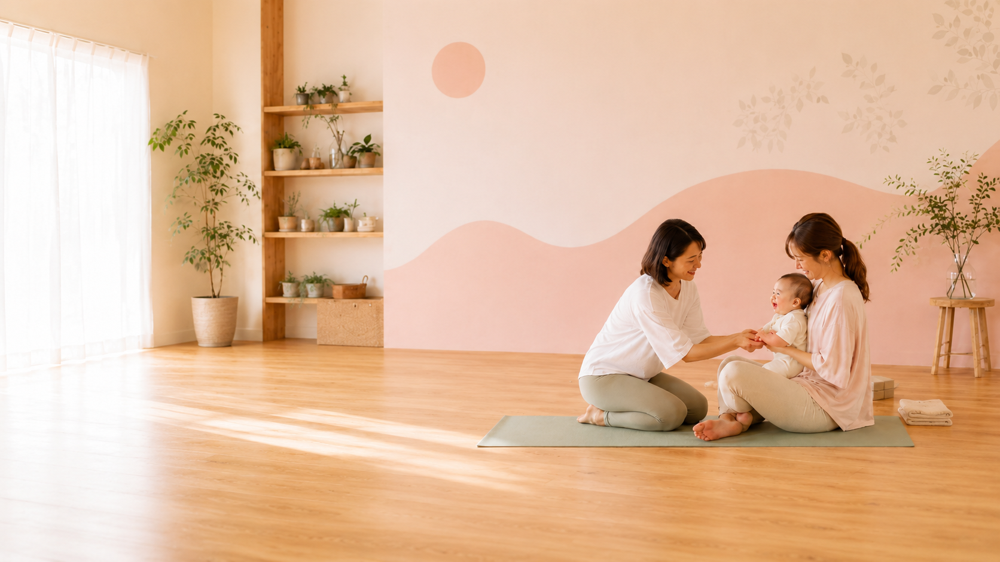

ヨガで、自分を取り戻す時間を。
ベビーサインで、赤ちゃんの気持ちが分かるようになる。
姪浜の少人数制スタジオ。
ヨガは初心者・マタニティ・産後・シニアまで対応。
ベビーサインはねんね期から。月齢に合わせたクラスをご用意。
Studio Likoのレッスン
ヨガとベビーサイン、どちらからでも始められます。
クラスのスケジュール
最新のスケジュールはこちらからご確認いただけます。
（準備中）
（準備中）
はじめての方へ
「どんな教室か気になる」という段階でも、お気軽にどうぞ。
Studio Liko
スタジオについて
福岡市西区・姪浜エリアにある、ヨガとベビーサインの教室です。
少人数制だから、一人ひとりに向き合えます。
自分のペースで、ほっとできる場所があります。
インストラクター
岩本 理子
Studio Liko 代表
「ヨガで癒しを、ベビーサインで
子育ての自信を届けたい。」
3児の母としての子育て経験をもとに、日本ベビーサイン協会認定マスター講師として、これまで6,000組以上・1万人以上の親子にベビーサインを伝えてきました。ヨガでは全米ヨガアライアンスRYT500を修了し、産後のママからシニア世代まで、一人ひとりに合わせた少人数レッスンを行っています。
プロフィール詳細を見る →スタジオの雰囲気
写真が届き次第、こちらに掲載します。
（準備中）
（準備中）
（準備中）
（準備中）
（準備中）
Studio Likoの特徴
最大7名の少人数制
「できているか不安」という方も、先生がしっかり見ます。初めての方も安心して参加できます。
幅広い方に対応しています
初心者・マタニティ・産後・シニアまで対応。それぞれの状態に合わせたクラスをご用意しています。
（仮）スタジオの特徴
（仮テキスト）床暖房・設備など、スタジオ環境についての説明が入ります。
ねんね期から参加できる月齢別クラス
生後2〜3ヶ月のねんねの時期から参加できます。成長に合わせたクラス設計で、無理なく続けられます。
日本ベビーサイン協会認定マスター講師
日本ベビーサイン協会（日本唯一の公認団体）認定のマスター講師が担当します。正規団体の確かな指導を受けられます。
6,000組以上の実績と経験
赤ちゃんの気持ちが少し分かるようになると、育児がぐっと楽しくなります。「伝わった」という体験が、ママ自身の自信につながります。
ヨガクラス
いつも頑張っているママたちに、ほっとできる時間を。
床暖房完備の少人数スタジオで、自分のペースで整えられるヨガです。 初心者・マタニティ・産後・シニアまで対応しています。
- グループヨガ（最大7名）
- マタニティヨガ・産後ヨガ
- シニアヨガ
- パーソナルヨガ・オンラインヨガ
ベビーサイン
まだ言葉が話せない赤ちゃんの気持ちを、手のサインで受け取る。
「伝わった」という感動が、育児をぐっと楽しくします。 月齢に合わせたクラスがあり、ねんねの時期から参加できます。
- ねんねの赤ちゃん講座（〜おすわり期）
- ハイハイからの赤ちゃん講座（〜歩き始め期）
- 体験会（初めての方向け）
料金のご案内
体験レッスン・体験会からお気軽にどうぞ。
※ 体験後1週間以内のご入会で入会金（6,000円）が免除されます。
継続コースの料金・その他クラスの詳細はこちら。
通われた方の声
Studio Likoに来てくださった方からいただいたご感想です。
準備中
「今しかないこの時期にベビーサインに出逢えて本当に良かったなぁと思います。素敵な時間、空間、学びを本当にありがとうございました。」
準備中
「私には自分に大切なものを見つめて補充できる、かかせない場所と時間です。先生の穏やかであたたかな笑顔に癒されます！」
準備中
「通ううちに明らかに柔らかくなっているのが分かりました。長年続いていた肩こりも改善されてきて、今ではしばらく行けない日が続くと体が固まっていくような気がしてムズムズしてきます。」
よくある質問
「こんなこと聞いていいのかな」と思うことも、お気軽にどうぞ。
まずは気軽にご連絡ください
「どんな教室か気になる」という段階でも大丈夫です。
LINEからお気軽にどうぞ。
福岡市西区愛宕南2丁目12-12（姪浜エリア）